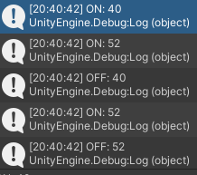

Per permettere all'utente di sapere come quello che vuole suonare dovrebbe essere suonato correttamente, risulterebbe utile permettere di riprodurre la notazione sotto forma di audio estrapolato dalla tabulatura.
AlphaTab fornisce la conversione di tabulatura in MIDI, ma resta il problema che Unity non supporta nativamente la riproduzione di file MIDI.
Esistono dei plugin per Unity che implementano la riproduzione MIDI per Unity, ma visto che AlphaTab implementa anche la generazione di stream audio a partire dal file MIDI e soundfont, ho scelto di implementare un ponte tra l'interfaccia di output dello stream audio di AlphaTab e il sistema audio di Unity.
Prendendo come riferimento l'implementazione dell'interfaccia per Windows dell'adattatore di output audio di AlphaTab sono riuscito a instradare lo stream audio prodotto dal sintetizzatore MIDI di AlphaTab verso il sistema audio di Unity attraverso il metodo OnAudioFilterRead di MonoBehaviour, che permette di implementare filtri audio su uno stream audio attivo emesso dal GameObject al quale e' attaccato lo script. La documentazione spiega come, se si mette in riproduzione costante una fonte audio senza alcun file da riprodurre, OnAudioFilterRead viene chiamato lo stesso su uno stream senza audio, il che permette di introdurre il proprio segnale nel sistema.
Giorni fa avevo cominciato un implementazione "di esplorazione" della riproduzione della tabulatura all'interno della scena in Unity con un sistema di aggiornamento della scena nel metodo Update, ma durante l'esplorazione del supporto MIDI di oggi ho trovato come gli eventi MIDI (gia' gestiti dalla riproduzione MIDI di AlphaTab) potrebbero essere una soluzione migliore per la gestione del timing degli eventi come creazione/distruzione di marker sul manico.
Per il momento ho solamente provato a ricevere gli eventi per verificare che funzionassero correttamente in Unity, ma prima dell'utilizzo effettivo di questi serve leggere la documentazione sul formato MIDI, dal momento che non e' chiaro cosa molti di questi rappresentino (per ora ho letto solo riguardo a eventi ON e OFF delle note).
